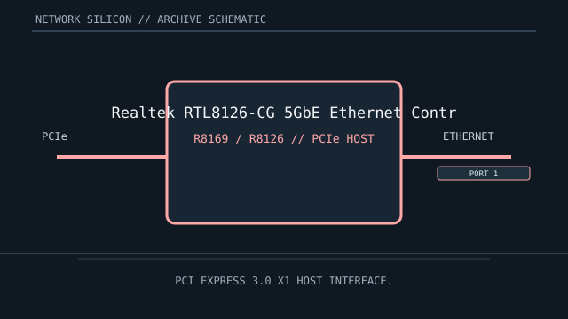

[ MODEL-SPECIFIC NETWORK HARDWARE ]
Realtek RTL8126-CG 5GbE Ethernet Controller
Single-port 5GbE PCIe Ethernet controller silicon for high-speed copper adapters and onboard LAN. This is a controller/chip record; finished-card details are implementation-specific.

IDENTIFICATION: Match complete component top-mark, stepping and board revision. Nominal signaling rates are not measurements of application throughput.
Exact specifications and compatibility
| Dedicated subcategory | Ethernet controllers and PHYs |
|---|---|
| Exact controller identity | Realtek RTL8126-CG 5GbE Ethernet Controller |
| Component / board identity | Controller IC with 5GBASE-T PHY; board implementation supplies magnetics, connector and thermal design. |
| PCIe bus and host interface | PCI Express 3.0 x1 host interface. |
| Ethernet ports / physical interface | One twisted-pair port with 10M/100M/1G/2.5G/5GBASE-T modes, negotiated with the cable and peer. |
| Nominal rate (not measured) | Up to 5 Gb/s nominal on one port; not measured throughput. |
| Drivers and OS compatibility | Realtek provides Windows driver packages for supported revisions; Linux support depends on kernel r8169 driver revision, with Realtek’s r8126 package available for some configurations. Verify exact PCI ID and distribution kernel. |
| Board / system compatibility | Requires an RTL8126-CG-based board with PCIe 3.0 x1 routing, appropriate power and 5GBASE-T magnetics/RJ-45. A 5Gb/s link requires a capable peer and suitable cable installation. |
| Revision and variant warning | RTL8126-CG is distinct from RTL8125B-CG (2.5GbE). Confirm the chip top mark and adapter revision; vendor driver packages are revision and OS dependent. |
| Measured throughput | No measured benchmark is claimed for a physical specimen. A valid result records the host, link partner, medium, driver/firmware, traffic pattern, test tool and duration. |
Identification and revision notes
RTL8126-CG is distinct from RTL8125B-CG (2.5GbE). Confirm the chip top mark and adapter revision; vendor driver packages are revision and OS dependent.
Realtek provides Windows driver packages for supported revisions; Linux support depends on kernel r8169 driver revision, with Realtek’s r8126 package available for some configurations. Verify exact PCI ID and distribution kernel.
Requires an RTL8126-CG-based board with PCIe 3.0 x1 routing, appropriate power and 5GBASE-T magnetics/RJ-45. A 5Gb/s link requires a capable peer and suitable cable installation.
Archival and preservation notes
Document package mark, PCI ID, card vendor/revision, driver build and board thermals. 5GbE copper adapters may use a heatsink; retain it and preserve airflow.
For an installed specimen, preserve source URL, access date, source revision and label/condition notes. Do not infer connector count or board-level compatibility from controller family name alone.
Manufacturer and driver sources
- Realtek RTL8126 product pageRealtek product information identifies RTL8126 as its PCI Express 5G Ethernet controller.
- Realtek PCIe Ethernet driversOfficial controller software catalogue, including RTL8126 5G PCIe driver downloads.
- Linux kernel Realtek r8169 driver sourceLinux r8169 driver implementation; controller-revision coverage depends on kernel support.
Sources cover the named controller family and its relevant driver ecosystem. The exact board vendor’s compatibility list takes precedence for a finished adapter or motherboard implementation.